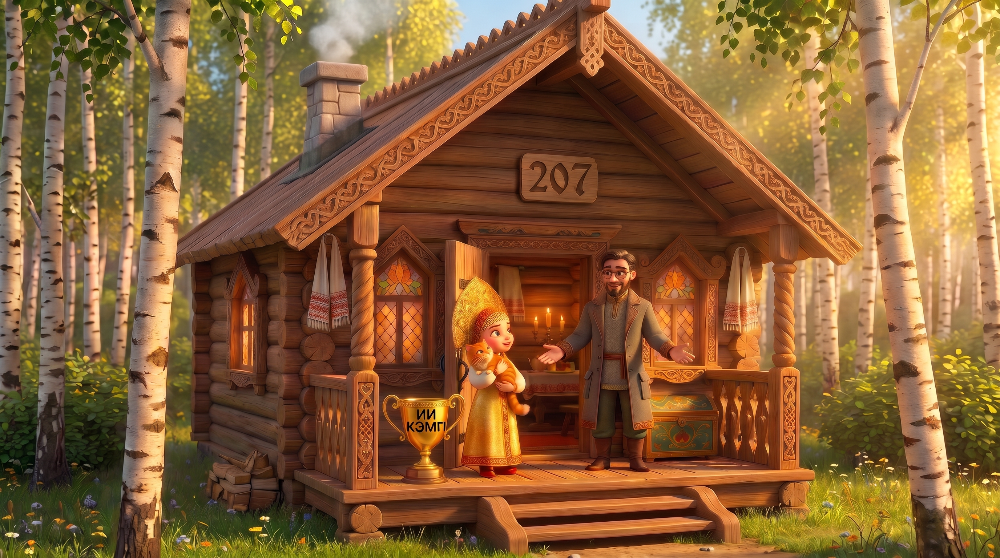

Изба 207: прежний кадр, номер 207, «ИИ Кэмп» чёрным
Было (вариант 2)

8.
9.

10. Буквы чуть крупнее
Сцена 13: «от зари до зари»
5.

Сцена 13: «пока самовар остынет»
6. Уснул, чашка падает

7. Дуют на самовар, чашка падает

Изба 208: утверждено